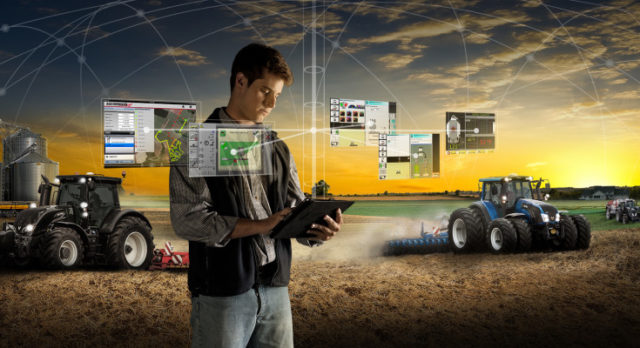
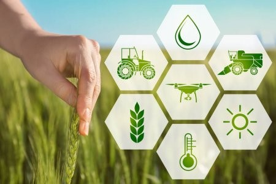

Equipamentos de Precisão na Agricultura
Entenda a mecanização da agricultura e conheça 4 vantagens
GPS, piloto automático, controladores eletrônicos, sensores e câmeras. Anos atrás, esses termos não faziam parte do vocabulário do produtor rural. Mas, hoje, o cenário é outro. Com a mecanização da agricultura, o trabalho rural ganhou tecnologias que otimizam os resultados no campo para atender uma demanda cada vez maior. Como essas novas ferramentas podem trazer um retorno real para o agronegócio? Vamos destacar, neste post, algumas vantagens de implementá-las na sua propriedade. Acompanhe!

A evolução dos implementos agrícolas
A introdução das máquinas no campo ocorreu no século 18 com a Revolução Industrial, que levou a mecanização não somente para as indústrias das cidades, mas também para o trabalho rural, com semeadeiras, tratores e colheitadeiras.
No entanto, bem antes disso, o homem sempre buscou novas técnicas e tecnologias para facilitar as tarefas agrícolas e elevar a produtividade. Por exemplo, entre 3.500 e 3.200 a.C., o agricultor implementou a roda. O uso de outras ferramentas mais simples remonta a períodos mais distantes, em torno de 8.000 a.C., quando o homem deixou de ser nômade, fixou residência e passou a produzir seu próprio alimento.
No século 13, arados de lâminas de madeira foram desenvolvidos. Então, por volta de 1.600, na Europa, foram criados instrumentos mais elaborados, como o semeador mecânico e o bando de cereais, movidos por tração animal ou humana.
Assim, a criação das máquinas movidas a vapor e que ocuparam as fábricas no século 18 foi o pontapé que faltava para a implementação de tecnologias de produção em larga escala. Já no século 19, a mecanização marcou presença nas propriedades rurais, dando início à chamada agricultura moderna, em 1850.
A partir daí, o desenvolvimento foi inevitável: máquinas movidas a gasolina, emprego de componentes eletrônicos e, por fim, como vemos hoje, uso de tecnologias digitais que trazem maior inteligência ao processo de decisão do produtor rural.
Conheça, nos próximos tópicos, as principais vantagens de toda essa evolução na mecanização da agricultura.
4 vantagens da mecanização da agricultura
Economia de tempo
É inegável a otimização do tempo que a mecanização garante ao processo produtivo. Em todas as etapas, da preparação do solo à colheita, o uso de máquinas torna o trabalho mais ágil. Em produções de alta escala, as atividades seriam praticamente inviáveis sem o uso dessas tecnologias. Tendo em vista a crescente demanda por alimentos, somente a mecanização poderia dar conta da produção dentro da janela de plantio que as lavouras apresentam. Por exemplo, 50 hectares de café podem ser colhidos de modo automatizado em, no máximo, 2 semanas. Manualmente, a mesma área poderia demandar 2 meses de trabalho. Isso ocorre porque a capacidade de trabalho aumenta. Como os frutos são retirados em menos tempo, a lavoura tem um tempo maior para uma florada mais uniforme e intensa, o que se traduz em uma produtividade maior na próxima safra.
Controle de qualidade
As novas tecnologias aplicadas à atividade agrícola são capazes de garantir maior qualidade aos produtos. Por exemplo, os métodos de colheita impactam diretamente a integridade e a higiene de grãos. Ao mecanizar essa etapa de produção, evita-se que o produto entre em contato com a terra, o que poderia comprometer sua qualidade e causar desperdício de alimentos. Em virtude de todas essas vantagens, é natural que surjam cada vez mais novas tecnologias a fim de otimizar o processo produtivo. Vamos apresentar algumas dessas tendências.
Economia de recursos
A mecanização pode reduzir os custos da produção em cerca de 30%. Por exemplo, uma pesquisa divulgada pelo Conselho Nacional do Café revelou que a diferença dos custos por saca entre os métodos de colheita manual e os mecanizados foi de 26% (R$350/saca no manual e R$257/saca no mecanizado). A maior parte da economia dos recursos estava nas despesas com pessoal — em torno de 58% a menos com o uso de máquinas (R$77/saca no mecanizado contra R$184/saca no manual).
Redução da mão de obra
A escassez de mão de obra qualificada no campo quebra a ideia de que a mecanização da agricultura retira vagas de emprego. Na verdade, a tecnologia também surge para dar uma solução ao produtor rural que não encontra trabalhadores para realizar as diversas tarefas da produção, sobretudo a colheita.
As principais tendências da mecanização
As tendências do agronegócio correm no sentido de garantir maior sustentabilidade e produtividade à atividade rural. Veja alguns desses caminhos que já estão sendo percorridos no intuito de evoluir ainda mais a mecanização agrícola.
Agricultura de precisão
A agricultura de precisão consiste em um conjunto de tecnologias que extrai da lavoura, do solo e do clima informações úteis para a tomada de decisões. Isso é um passo além da mecanização e da automação dos processos. Por exemplo, há alguns anos — e ainda praticado atualmente —, costumava-se retirar uma amostragem do solo da propriedade e fazer um diagnóstico que seria aplicado a toda a propriedade. Essa análise não era precisa, uma vez que dentro do talhão pode haver grande variação nas características do solo. Com a agricultura de precisão, é possível fazer um mapa de produtividade orientado via satélite. Esses dados permitem que o produtor aplique fertilizantes e defensivos em quantidade variável, de acordo com a necessidade específica de cada área do talhão. Além disso, esses instrumentos possibilitam a aplicação na taxa exata que a lavoura precisa, evitando sobreposições e reduzindo a deriva.
Máquinas autônomas
Embarcados com GPS, piloto automático e conexão à internet, os veículos autônomos são capazes de percorrer trajetos predeterminados com o mínimo possível de intervenção humana. Dessa forma, as passadas se tornam mais precisas. Além disso, os veículos autônomos trabalham por mais tempo do que seria possível caso fossem operados por um humano.
Drones
Os drones são veículos não tripulados, capazes de percorrer longas distâncias e captar imagens aéreas da propriedade. Esses arquivos podem ser usados para analisar a lavoura, identificando falhas na linha de plantação, nível de maturação do cultivo, presença de pragas, entre outras informações. Além disso, com um monitoramento aéreo, é possível descobrir nascentes de água, identificar locais onde seria possível abrir estradas, encontrar focos de incêndio, medir propriedades etc. As possibilidades são diversas. Indiscutivelmente, a mecanização da agricultura trouxe vantagens antes inimagináveis. Devido a esses avanços, a tendência é que as máquinas e as tecnologias evoluam ainda mais e tornem o agronegócio cada vez mais forte não só no Brasil, mas também em todo o mundo. Quer continuar por dentro das principais tendências do setor? Então, assine a nossa newsletter e fique bem informado!

Telefone
(011) 3256-6589
(11) 998745-5625
portaldocampo@pdc.org.br